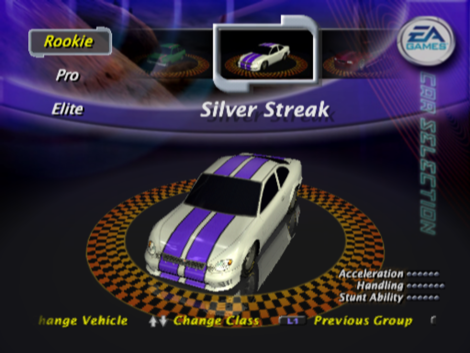
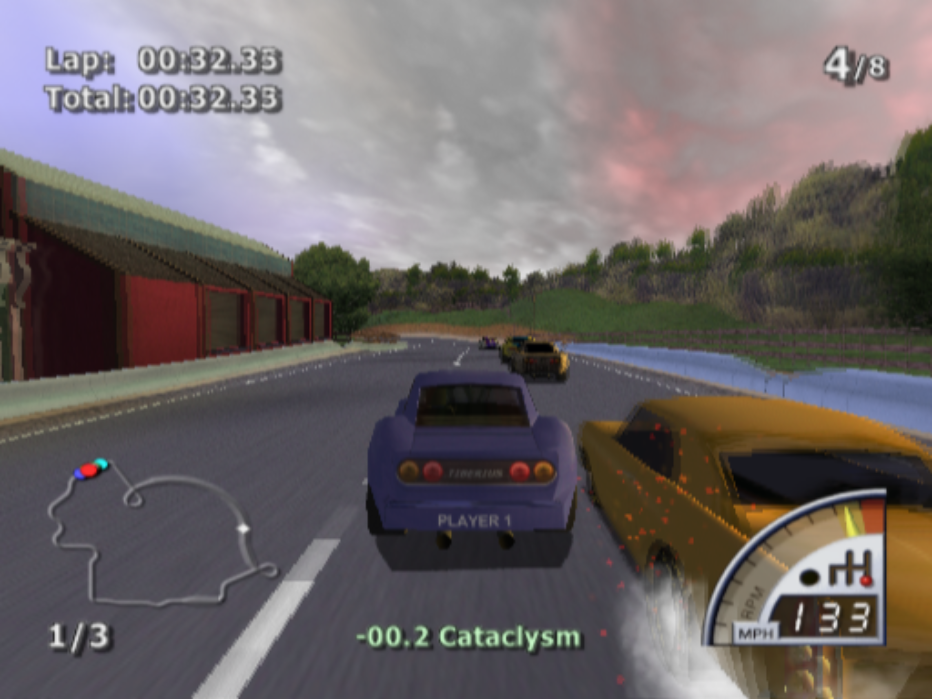
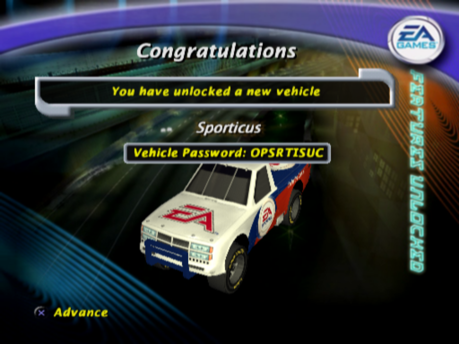
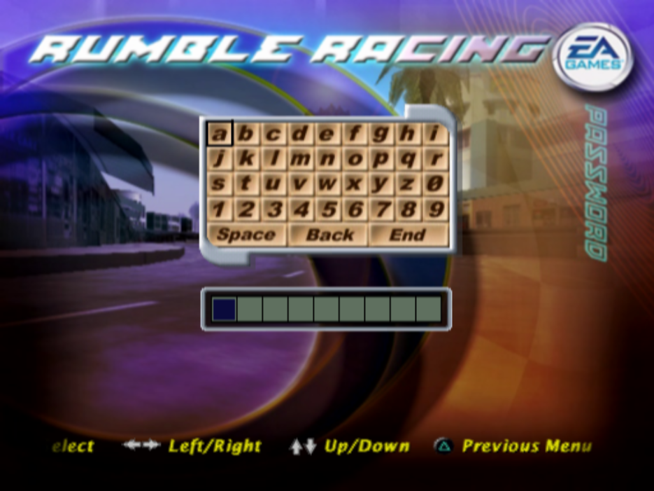
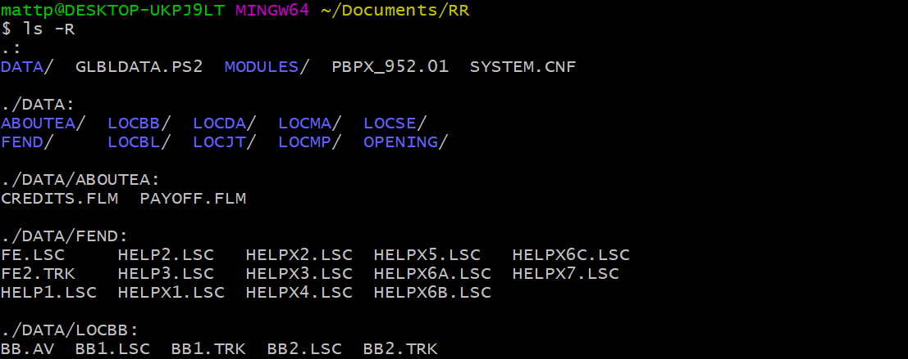
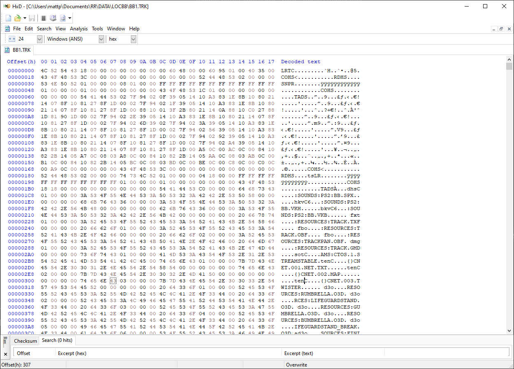
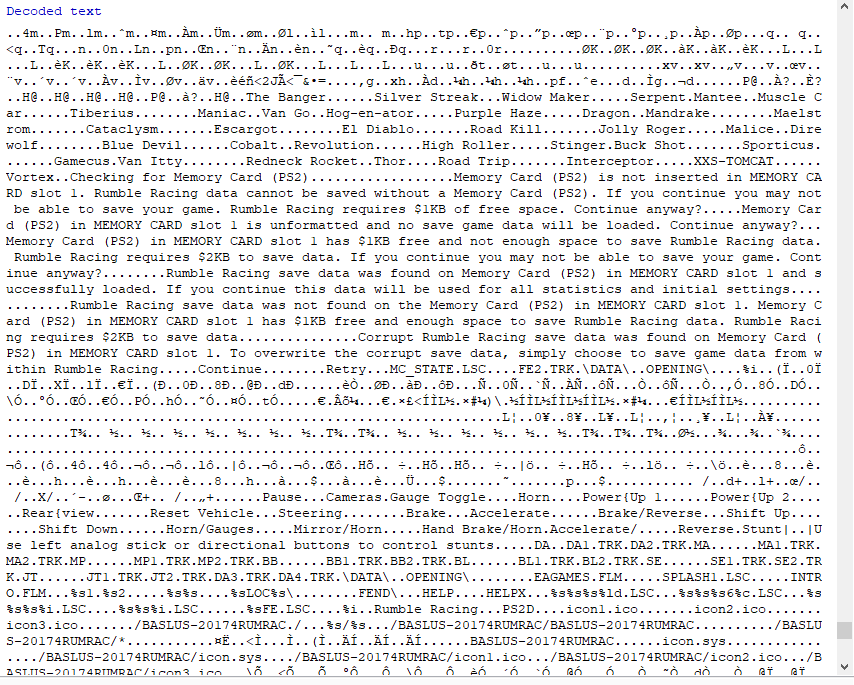
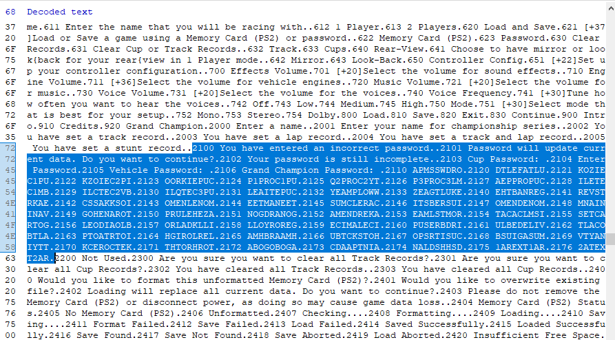

I found 25 undiscovered cheats in Rumble Racing 20 years later
And one of the hidden passwords is undisputably the best of them all
Rumble Racing
Rumble Racing is a racing video game developed by EA Redwood Shores for the PlayStation 2 and was released on April 23, 2001. It’s a fast-paced arcade style racing game with tons of cars ranging from muscle cars and hot rods to a jet-fueled car and an RV. The game features an exciting power-up system à la Mario Kart enabling the player to strategically use power-ups such as bombs, shockwaves, speed boosts and more to gain an advantage over other players.
As a kid, it was one of the games I frequently played with my friends, as it had a two player mode, 36 cars, and 15 tracks which offered endless competition and replay value.


Car selection screen and example gameplay
In the beginning, only 11 of 36 cars and 3 of 15 tracks are unlocked. New cars and tracks are unlocked by winning cup challenges. Additionally, there are 14 extra cars which are only unlocked by finding easter eggs which are hidden throughout each of the first 14 maps. Naturally, unlocking everything takes a long time and isn’t an easy challenge.
Password System
After the player achieves certain milestones, the game will display a password to the user which can be used to unlock everything up to that point, or in the event of finding an easter egg, it will display a password that can be used to unlock that secret car.


A secret car unlocked by collecting an easter egg on the “Car Go” track, and the password entry screen
A valid password is formed by using characters a-z, 0-9, or a space, and must be nine digits in length.
This gives (26 + 10 + 1)^9 or
129,961,739,795,077
total combinations.
129 Trillion possible passwords… That’s a lot to try and guess.
Realistically, there are only a few ways that these passwords would ever be discovered: The game reveals passwords after progression (as Rumble Racing does), developers reveal passwords to game journalists/other sources, or a player happens to guess a password with an astronomically stupid amount of luck.
The fourth, and far more interesting option, is reverse engineering the game and figuring out its hidden secrets for ourselves.
Rumble Racing in Reverse
Since the game was released in an early era of the internet, things like passwords generally circulated as word of mouth and were often procured in bits and pieces on websites like GameSpot/GameFAQs. As a result, if you wanted to get an entire list of passwords or cheats for a game, you often had to collect all of that information yourself from different sources.
When coming back to play this game for nostalgia purposes I naturally wondered if Rumble Racing had any hidden secrets that have yet to be discovered beyond the passwords that were presented to the players.
Understanding the files

After extracting the contents of the Rumble Racing .ISO file, we are able to see how the game’s file system is structured, and using a hex editor such as HxD I was able to poke around in some of these files and get a sense for what is going on under the hood.
The first thing to notice is that the LOC prefixed folders all contained
three types of files: .AV, .LSC, and .TRK.
In my best guess, these all stand for Audio/Video, Loading Screen, and Track
respectively.
All of these files were hand-crafted by the developers at EA.
They appear to contain some kind of file system, as there are commonly repeated
magic 4 byte words (LRTC, COHS, TADS, etc.), as well as all kinds of data interspersed between them.
I assume that most (if not all) of the actual game assets and other data
found in these files have been pre-processed and compressed.
The game engine likely parses these files at runtime,
decompresses the data, and pulls it all into memory as needed.

An example .TRK file showing what appears to be a custom file system and names of game assets
It would probably take a lot of effort to understand how this proprietary file structure is designed and
write something to parse it all out.
Since we are looking for passwords, A good place to start would be to look for the hardcoded strings
in the actual game executable.
It is an ELF file found in the root folder named PBPX_952.01.
This turned out to give a lot of information.
There are tons of strings: The names of the cars,
menu/user interface messages, error messages, even the compiler used! MW MIPS C Compiler (2.4.1.01).

Examples of strings found in the game’s executable file.
Unfortunately, I was unable to find any strings that contained password, pass, or any
strings that contained passwords that we already have knowledge about.
Where are the passwords?
The passwords obviously weren’t hardcoded into the game’s source code, otherwise they would have shown up in the game’s exectuable file. This led me to believe that they were packed into the game’s internal filesystem somewhere. They are buried somewhere in the compressed data and pulled out at runtime.
This means that I won’t get anywhere until I find a way to extract all of that information from the game’s files. I decided to take a lazy approach to finding the decompressed information and let the PlayStation 2 emulator PCSX2 do all of that hard work for me.
I booted up the game and navigated to the password entry screen and made a save state at that point.
This is the equivelent of being able to pause time while playing the game and inspecting the PS2’s
32 megabytes of RAM at that exact moment.
PCSX2 save states can be renamed and opened as .zip files, where the internal PS2 game state
can be extracted and looked at.
I searched for a password that I already knew, and voilà! It appears to be every password in the game!

This entire chunk of memory that the passwords happen to be in has a few curious properties. It looks like it’s some kind of key/value map of strings, where the key is some kind of numerical index:
{
// ...
"2416": "Save Found",
"2417": "Save Not Found",
"2418": "Save Aborted",
"2419": "Load Aborted",
"2420": "Insufficient Free Space",
"2421": "Idle",
"2500": "Press * with controller in",
"2501": "controller port 2 to configure.",
"2502": "Would you like vibration turned on?",
// ...
}What is the purpose of this design? It’s hard to say without having any knowledge of how the game engine works. Perhaps the game stores all of its dynamically loaded assets in a similar way. I could easily envision a system where each type of dynamically loaded game object (including strings apparently) are stored in a key-value map of that type like this:
// C++
std::map<std::string, std::string> mapOfStrings;
mapOfStrings["2416"] = "Save Found"; // but set dynamically during asset loading routine
// and so on...It’s really interesting to speculate about how the game engine works, but let’s get back to our passwords.
Show me the passwords!
After processing the data, I found 52 nine digit passwords in total. I created a Google Sheets spreadsheet to document each password I had discovered and compare them to passwords that people have already found a long time ago.
What I discovered was that 25 of these passwords were completely unique and unknown before today. Doing a Google search for the literal passwords provided zero references, anywhere. These were brand new passwords that I had stumbled across. A pretty cool feeling!
My next task was to figure out what each new password did.
It appears that all of the passwords are anagrams
of the thing that they unlock.
For example, the new password EAMLSTMOR is an anagram of MAELSTROM, which unlocks the Maelstrom car in the game.
I realized that 22/25 of these passwords were simply passwords that unlocked individual cars. Interestingly, 11 of these passwords unlock cars which are already unlocked by default, which makes these passwords effectively useless. You can still put them in and it will play a successful password sound/prompt.
The fact that there is a cheat to unlock every car makes me believe that the developers probably didn’t decide which cars would be locked/unlocked by default until very late in the development process.
Important New Passwords
The remaining three passwords are as follows: APMSSWDRO, DTLEFATLU, and 2ATEXT2AR.
APMSSWDRO seemed to unlock everything in the game in one simple password! With an anagram of MPASSWORD, it probably stands for “Master Password”.
But alas, this was never known about for all of this time.
Before this password, if you wanted to unlock everything, you’d have to individually enter at least 15 cheats.
That’s a lot of tedious work.
It also makes sense why this password was never disclosed.. It would make all of the other passwords useless.
People would just enter this single password and unlock everything.
I was unable to find out what DTLEFATLU does. Considering the likely anagram is DEFAULT, it probably doesn’t
do anything and could have been used as a test password when making the password system.
Or, who knows, it could have some amazing secret.
It will probably take actual reverse engineering of the game’s code to understand
what this password does, if anything at all.
2ATEXT2AR is the last password in the list, and very similar to 1AREXT1AR. 1AREXT1AR unlocks the last car in the game.
Although this password shows up at the end of the list of passwords, it actually isn’t considered a valid password by the game.
This leads me to believe that there perhaps was an additional car in the game that originally had an unlock cheat, but was then removed.
Final Thoughts
This interesting little trip down this rabbit hole was surprisingly rewarding. Since this is a nostalgic childhood game for me that I spent countless hours on, it feels great to have discovered something new about it that nobody else has, and just over two decades after its original release.
What a strange feeling knowing that these passwords have existed for so long under everyone’s noses, but have gone ignored for so long! You never know, there might be some hidden secrets in your own favorite nostalgic games that are begging to be discovered.